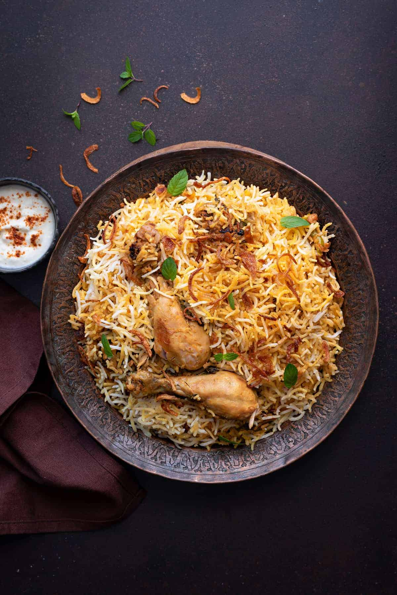

To make a classic Chicken Biryani, marinate 500g chicken in yogurt, ginger-garlic paste, turmeric, chili powder, and biryani masala for at least 30 minutes.
Key Steps:
- Parboil Rice: Rinse basmati rice until clear, soak for 30 minutes, then boil with whole spices (cardamom, cloves, cinnamon, bay leaf) until 90% cooked.
- Cook Chicken: Sauté sliced onions until golden, then cook the marinated chicken in a heavy pot until partially done.
- Layer and Dum: Spread the parboiled rice over the chicken, then garnish with fried onions, saffron-infused milk, fresh mint, and coriander.
- Steam: Seal the pot with foil and a lid, then cook on low heat (Dum) for 20–25 minutes before resting for 10 minutes.
Now you delicious briyani read you serve.
